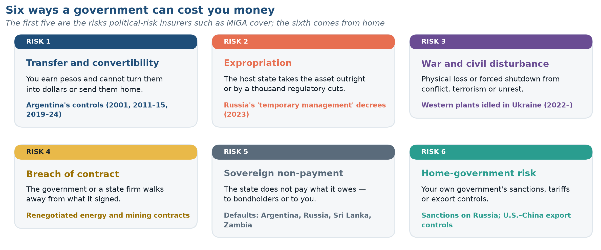
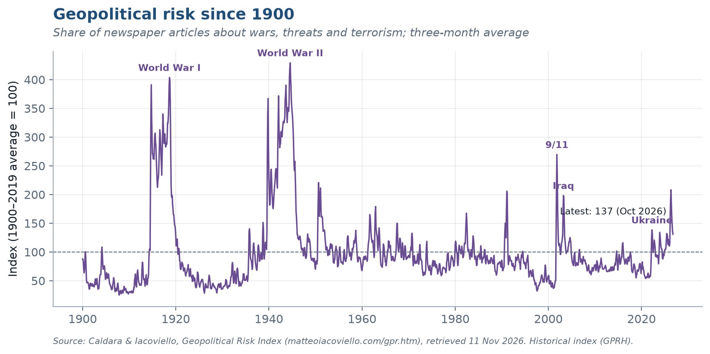
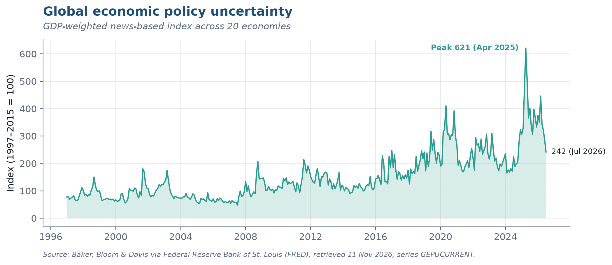

4 Political Risk in International Finance
Data in this chapter were last refreshed on 11 November 2026.
4.1 Why this chapter matters
Political risk is the chance that a government — the host country’s or your own — or a political event changes what a cross-border investment is worth. Exchange-rate risk can be hedged in a market. Most political risk cannot, which is why firms manage it through structure, contracts and insurance rather than derivatives.
Key questions
- What can a government do to a foreign investor, and which of those actions can be insured?
- Can political risk be measured, or only described?
- Why is the risk from your own government — sanctions, tariffs, export controls — now as large as the risk from the host?
- How should political risk enter a discount rate, and when should it enter the cash flows instead?
4.2 What can go wrong
4.3 Measuring it
Two research indexes turn newspaper coverage into a monthly number. The geopolitical risk index of Caldara and Iacoviello counts articles about wars, threats and terrorism, back to 1900.

The economic policy uncertainty index of Baker, Bloom and Davis measures something different: uncertainty about what governments will do to taxes, trade, regulation and money.

4.4 Managing it
Firms have four tools: structure (local partners, local borrowing, staged investment), contracts (bilateral investment treaties and international arbitration), insurance (the World Bank’s MIGA, the U.S. Development Finance Corporation and private insurers) and price (a higher hurdle rate or explicit scenario cash flows).
Running case. Chattanooga Precision Components’ Mexican warehouse faces little expropriation risk. Its bigger exposure is home-government risk: a change in U.S.–Mexico trade terms, such as one arising from the USMCA’s scheduled 2026 joint review, would change the subsidiary’s value without Mexico doing anything at all.
In the News
Where this sits in the reference texts: ESM 17 · MAD 16 · BH 14 · SHA 3 (provisional mapping from the table of contents).